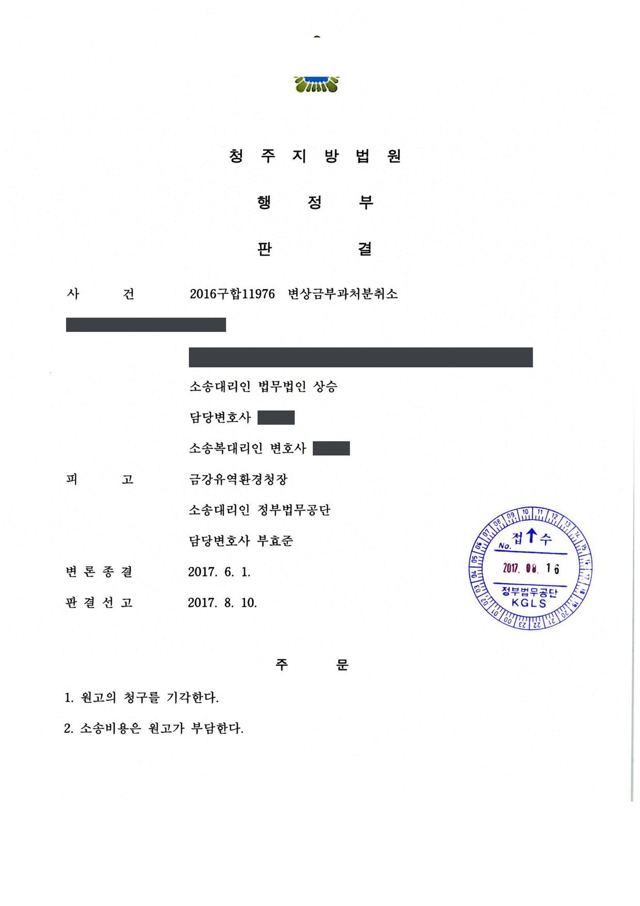
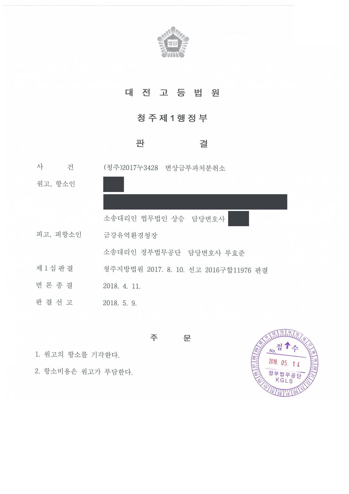

국유지 변상금 부과처분 취소소송 (1·2심)
청주지방법원 2016구합11976 · 대전고등법원 2017누3428 · 담당변호사 부효준
사건의 요지
하천 인근 국유지에 양어장 시설 등을 설치하여 점유·사용하였다는 이유로 한 변상금 부과처분에 관하여, 점유·사용의 범위와 변상금 산정의 적법성이 다투어진 사건입니다.
사건의 주요 내용
원고는 양어장과 음식점을 운영하면서, 양어장에서 기른 송어를 음식점에 공급하기 전에 일시 보관하기 위하여 음식점 인근의 국유지 8필지(합계 약 6,306㎡) 위에 양어장, 산소탱크, 발전기, 철교, 정화조, 집수정, 등나무 그늘막, 차량출입로 등의 시설을 설치하여 이용해 왔습니다. 원고는 1987년부터 이 토지에 관하여 유휴지 점용허가를 받아 왔으나, 상수원보호구역 안에서 양식행위를 하는 것은 수도법상 허용되지 않는다는 감사 지적에 따라 점용허가 연장이 거부되어 1998년 말 점용허가 기간이 만료되었습니다.
그 뒤 종전 관리기관과 2009년 관리권을 이관받은 처분청은 여러 차례 철거·원상회복을 요구하고 대집행 계고를 하였으며, 2010년 원고의 사용허가 신청을 상수원 수질보전을 이유로 거부하였습니다. 2004년 10월부터 2009년 9월까지의 변상금 약 1억 4,700만 원과 2009년 10월부터 2012년 12월까지의 변상금 약 1억 500만 원도 부과되었고, 원고가 거부처분·계고·변상금에 대하여 제기한 취소소송은 모두 패소로 확정되었습니다.
처분청은 2016년 9월 원고가 2013년 1월부터 2015년 12월까지(그늘막이 있던 4필지는 2014년 7월 그늘막 철거 시까지) 사용허가나 대부계약 없이 국유지를 무단 점유·사용하였다고 보아 국유재산법에 따라 95,621,240원의 변상금을 부과하였고, 원고는 그 취소를 구하는 소를 제기하였습니다. 부효준 변호사는 1심과 항소심에서 처분청을 대리하였습니다.
원고의 주장
- 원고가 점유한 부분은 양어장 등 시설을 설치한 1,131㎡에 그치고 나머지 부분은 점유한 사실 자체가 없으므로, 토지 전체를 점유하였다고 본 변상금 부과처분은 점유면적에 관한 사실을 오인한 것이라고 주장하였습니다.
- 변상금 부과의 요건인 무단점유는 배타적 점유만을 의미하는데, 시설이 설치되지 않은 나머지 부분은 등산객의 주차장, 마을주민의 쉼터, 수질조사 작업, 마을축제 개최 등에 이용되어 원고가 배타적으로 점유하였다고 볼 수 없고, 2015년 8월 도로 경계의 펜스를 철거한 뒤에는 더욱 그러하다고 주장하였습니다.
부효준 변호사의 주장
- 토지 전체가 도로 경계의 펜스로 외부와 차단되어 인접지와 구별되었고 펜스에 ‘시설물과 송어는 사유재산이므로 무단출입 시 법적조치를 하겠다’는 표지판까지 게시되었던 점, 펜스를 철거한 뒤에도 인도·전봇대·경계석 등이 있어 제3자가 들어오기 어려운 점, 양어장 시설이 토지 중앙에 분포하여 시설이 없는 부분도 차량 이동과 주차 등 양어장 운영에 사용될 수밖에 없는 점을 들어 처분청의 측량과 점유면적 인정이 타당하다고 주장하였습니다.
- 국유재산법상 변상금 부과의 요건인 점유 또는 사용·수익은 독점적·배타적일 필요가 없고 병존적인 경우에도 성립하므로, 일반인의 출입이나 이용이 가능하였다는 사정이 있더라도 자신의 편의를 위하여 주로 점유·사용해 온 원고의 무단점유가 부인되지 않는다고 주장하였습니다.
법원의 판단
1심 법원은 물건에 대한 점유란 사회관념상 사실적 지배에 있다고 할 수 있는 객관적 관계를 가리키고 반드시 물리적·현실적으로 지배할 필요는 없다는 대법원 판례(2012. 1. 27. 선고 2011다74949 판결)를 전제로, 원고가 점용허가 기간 만료 후에도 양어장 시설을 계속 점유·사용하면서 토지 전체에 대하여 다시 점용허가를 신청하였던 점, 펜스와 표지판으로 토지 전체가 외부와 차단되었던 점, 펜스 철거 후에도 종전과 같은 용도로 사용하여 점유를 상실하지 않은 점, 시설이 없는 부분도 양어장 운영에 사용될 수밖에 없는 점 등을 들어, 원고가 그늘막 철거 시까지는 토지 전체를, 그 후에는 나머지 4필지를 사실상 지배하며 점유 또는 사용·수익하였다고 판단하였습니다.
배타적 점유 주장에 대해서는, 변상금 부과 요건인 점유·사용·수익은 독점적·배타적일 필요가 없고 병존적인 경우라도 가능하므로, 원고가 주로 송어 양식·보관 등 자신의 편의를 위하여 토지를 계속 점유·사용해 왔고 등산객이나 마을 주민 등은 일시적으로 출입·이용한 것에 불과한 이상 제3자의 출입 가능 여부와 관계없이 변상금을 부과할 수 있다고 보아 원고의 청구를 받아들이지 않았습니다.
항소심은 1심 판결의 이유를 인용하면서, 펜스 철거만으로 점유·사용 상태가 소멸한다고 보기 어렵고 시설 배치와 간격, 음식점 방문객의 양어장 관람 등을 고려하면 토지 전체가 음식점 영업에 활용되고 있으며, 원고가 송어를 관리해야 하므로 제3자의 출입을 아무런 제한 없이 방임할 수는 없을 것이라는 점을 추가하여 2018년 5월 항소를 받아들이지 않았습니다. 원고가 변상금 액수의 조정을 희망하며 변론재개를 신청하였으나, 변상금 부과는 처분청의 재량이 허용되지 않는 기속행위이고 국유재산법 제72조 제3항에 따라 변상금에는 사용료·대부료의 조정이 허용되지 않는다는 이유로 받아들이지 않았습니다.
물건에 대한 점유란 사회관념상 어떤 사람의 사실적 지배에 있다고 할 수 있는 객관적 관계를 가리키는 것으로서, 사실상의 지배가 있다고 하기 위하여는 반드시 물건을 물리적ㆍ현실적으로 지배할 필요는 없고, 물건과 사람과의 시간적ㆍ공간적 관계와 본권관계, 타인의 간섭가능성 등을 고려하여 사회관념에 따라 합목적적으로 판단하여야 하므로, 물건에 대한 사실상의 지배를 상실했는가의 여부도 역시 위와 같은 사회관념에 따라 결정되어야 한다(대법원 2012. 1. 27. 선고 2011다74949 판결 등 참조).
청주지방법원 2016구합11976 판결 이유 ‘2. 라. 판단 1)’ 부분(대전고등법원 2017누3428 판결이 인용)
또한 국유재산법상 변상금 부과의 요건으로서의 점유 또는 사용ㆍ수익은 반드시 독점적, 배타적일 필요는 없고 병존적인 경우라도 가능하므로, 원고가 국유지를 사용허가나 대부계약 없이 자신의 편의를 위하여 주로 점유 또는 사용ㆍ수익하여 왔다면, 그 국유지에 일반인들의 출입 또는 이용이 가능했다는 사정이 있다고 하더라도 원고가 그 국유지를 무단으로 점유 또는 사용ㆍ수익하고 있다고 보아야 한다.
살피건대, 앞서 본 증거들과 변론 전체의 취지에 의하면, 이 사건 각 토지는 원고가 주로 송어 양식 및 보관 등 자신의 편의를 위하여 계속 점유 또는 사용ㆍ수익하여 왔던 것이고 다만 등산객이나 마을 주민들 또는 공공기관 직원 등이 일시적으로 이를 출입 또는 이용하였던 것에 불과해 보이며 펜스 철거 후에도 그 상황이 달라지지는 않은 점을 인정할 수 있어, 이러한 경우에는 제3자의 출입 또는 이용 가능 여부와 관계없이 원고가 이 사건 각 토지 또는 위 (5) 내지 (8) 각 토지를 무단으로 점유 또는 사용ㆍ수익을 한 것으로 보아 변상금 부과처분을 할 수 있다고 보아야 하므로, 이와 다른 전제의 원고의 위 주장도 이유 없다.
청주지방법원 2016구합11976 판결 이유 ‘2. 라. 판단 3)’ 부분(대전고등법원 2017누3428 판결이 인용)
※ 판결 이유 가운데 이 사건의 판단 기준이 된 부분을 그대로 옮긴 것으로, 당사자 이름 등은 가렸습니다.
이 사건이 보여 주는 것
국유지 변상금은 사용허가나 대부계약 없이 국유재산을 점유·사용한 사실이 있으면 사용료의 120%로 부과되는 기속행위이고, 그 액수의 조정이나 감경은 허용되지 않습니다. 따라서 변상금을 다투는 쟁점은 사실상 ‘점유·사용의 범위’로 모아지는데, 이 판결은 시설물이 직접 놓인 부분뿐 아니라 펜스·표지판으로 둘러싸여 영업에 활용되는 부분 전체가 점유 범위에 포함되고, 펜스를 철거하였다는 사정만으로 점유가 소멸하지 않는다고 보았습니다.
또한 변상금 부과 요건인 점유는 배타적일 필요가 없어, 등산객이나 주민이 드나들 수 있었다는 사정은 무단점유를 부인하는 근거가 되지 못합니다. 점용허가 만료 후 시설을 철거하지 않고 사용허가도 받지 못한 상태가 길어지면 회계연도마다 변상금이 되풀이 부과되고, 앞선 소송에서 확정된 판단이 뒤의 사건에서도 그대로 전제되므로 초기에 점용 관계를 정리하는 것이 중요합니다.
판결문 2장


비슷한 처분을 받으셨다면
행정처분은 처분이 있음을 안 날부터 90일 이내에 행정심판이나 취소소송으로 다투어야 하고, 기간이 지나면 돌이킬 수 없는 처분은 집행정지를 서둘러야 합니다. 처분서를 받은 날짜부터 확인해 드립니다.